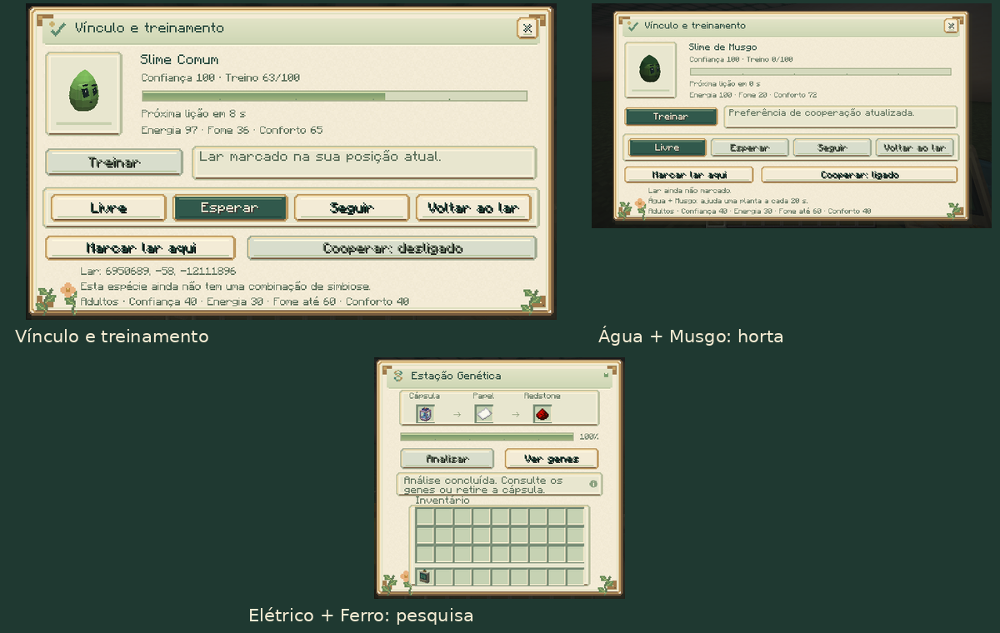

Vínculo, treinamento e simbiose
Guia do mod · Cuidado e captura · Genética

Abrir o painel
Alimente manualmente um slime para se tornar seu cuidador. Depois, agache e use o analisador genético no seu slime para abrir o painel de vínculo. O uso normal do analisador continua abrindo a inspeção genética.
Somente o cuidador próximo, com visão livre e permissão de construção, pode controlá-lo. O painel fecha ao perder o alcance ou acesso ao indivíduo.
Ensinar comandos
Com 40 de confiança, energia de pelo menos 40, fome de no máximo 60 e conforto de pelo menos 40, pressione Treinar. O slime precisa estar calmo, com pelo menos metade da vida e fora de reprodução, montarias ou laços. Dano recente também interrompe a disponibilidade de lições.
Cada lição:
- Gasta 5 de energia e acrescenta 3 de fome.
- Acrescenta até 1 de confiança, respeitando o limite 100.
- Concede 4 a 10 pontos de treino, conforme sociabilidade e estabilidade.
- Exige 200 ticks carregados de recuperação: dez segundos a 20 ticks/s.
Com os dois genes em 0,50, uma lição concede sete pontos. Os pontos chegam até 100; uma lição no limite concede apenas o que falta, e não é possível cobrar outra lição depois de completar o treino. A aprendizagem não modifica alelos.
| Ordem | Pontos necessários | Comportamento |
|---|---|---|
| Livre | 0 | Retoma alimentação, agrupamento e movimentação naturais |
| Esperar | 20 | Guarda o ponto onde a ordem foi dada e volta a ele se for afastado |
| Seguir | 40 | Acompanha o cuidador disponível na mesma dimensão, a até 32 blocos |
| Voltar ao lar | 60 | Procura o lar marcado e passa a esperar ao chegar |
Todas as ordens aprendidas exigem 40 de confiança. Livre continua disponível para o cuidador abaixo desse valor. A autodefesa tem prioridade; o slime retoma a ordem depois do combate. Ordens suspendem a busca de comida solta: mantenha a alimentação manual ou um alimentador próximo.
O deslocamento usa navegação e saltos normais. Não há teleporte, travessia de paredes nem carregamento de chunks para procurar o cuidador. Seguir fica à espera se o cuidador estiver indisponível, longe demais ou em outra dimensão. Com energia abaixo de 20, o deslocamento da ordem pausa para permitir descanso.
Marcar um lar
No painel, Marcar lar aqui usa a posição atual do cuidador. Escolha piso sólido, seco, dentro da borda do mundo e com espaço para o corpo inteiro do slime. É possível marcar o local antes de aprender Voltar ao lar.
O retorno só funciona na dimensão do lar e com a região carregada. Um local bloqueado ou inundado não é usado. Ao chegar, o slime muda para Esperar; a margem de chegada acompanha o tamanho do corpo e a navegação do Minecraft.
Ativar uma simbiose
Abra o painel de cada parceiro e ligue Cooperar. Ambos precisam ter o mesmo cuidador, ser adultos e estar calmos, com:
- Confiança de pelo menos 40.
- Energia de pelo menos 30.
- Fome de no máximo 60 e conforto de pelo menos 40.
- Ausência de dano recente, reprodução, laço, montaria ou passageiros.
Os parceiros precisam estar a até seis blocos, com visão livre entre si. Cooperam quando estão Livres ou Esperando; Seguir e Voltar ao lar suspendem o trabalho. Ensinar Esperar ajuda a organizar uma equipe junto ao local de serviço. A preferência começa desligada nos indivíduos novos e nos saves antigos.
| Parceiros | Trabalho | Custo por participante | Recuperação compartilhada |
|---|---|---|---|
| Água + Musgo | Avança uma planta em um estágio de crescimento | 6 de energia e +3 de fome | 400 ticks: 20 s |
| Elétrico + Ferro | Acrescenta até quatro ticks ao processamento da estação ou incubadora | 2 de energia e +1 de fome | 20 ticks: 1 s |
Não há cobrança quando não existe trabalho válido. Os dois participantes recebem a recuperação; o mesmo ajudante não pode ser reutilizado imediatamente em outra dupla ou máquina. Alimentar os slimes repõe as condições de trabalho. As demais espécies ainda não têm uma combinação de simbiose nesta versão.
Água + Musgo na horta
Coloque os parceiros a até quatro blocos das plantas, com visão livre até elas.
A dupla atende trigo, cenoura, batata e beterraba; outras plantas que usam o
comportamento CropBlock também podem ser atendidas. Cada ação avança apenas
um estágio de uma planta que ainda possa crescer. Não planta nem colhe itens.
O cuidador precisa estar online na mesma dimensão e ter permissão para alterar
o local. A dupla respeita mobGriefing e os eventos de proteção do NeoForge.
Paredes, falta de parceiro, plantas maduras e ações recusadas não gastam recursos.
Elétrico + Ferro nas máquinas
Mantenha ambos a até quatro blocos da máquina, com visão livre até ela. A cápsula processada precisa pertencer ao cuidador da dupla, e ambos devem estar ativados para cooperar.
O apoio só ocorre depois que a máquina valida e aceita um tick de processamento. Sem cápsula, trabalho iniciado ou materiais corretos, não há cobrança aos ajudantes. A pausa continua funcionando normalmente.
O bônus reduz o tempo de processamento. A análise ainda consome um papel e uma redstone; a incubação ainda consome um alimento e um suplemento. Resultados, crescimento concedido, identidade, genes e regras dos tokens permanecem iguais.
Persistência e configuração
Experiência, ordem, lar, preferência de cooperação e recuperações são salvos com o indivíduo e preservados pela cápsula. As recuperações não avançam enquanto ele está capturado ou descarregado. Metamorfoses conservam o aprendizado; filhotes começam sem treino e sem herdar as ordens ou o lar dos pais.
O servidor pode desligar companions.training e companions.symbiosis nas
configurações. Isso não apaga o progresso. O cuidador
continua podendo cancelar a ordem com Livre e desligar uma cooperação armazenada.
Funções individuais
Fogo, Fúngico, Abyssal e Âmbar também têm um botão Função no painel. Consulte funções individuais para aquecimento, compostagem, auxílio subaquático e armazenamento. A simbiose mantém seus controles próprios.